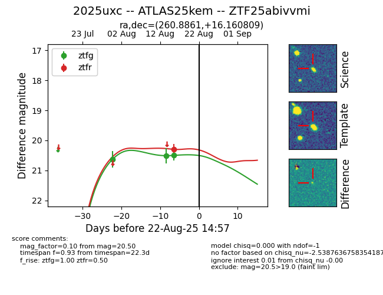

Target 2025uxc at 2025-08-22 14:57, see:
FINK: fink-portal.org/ZTF25abivvmi
Lasair: lasair-ztf.lsst.ac.uk/objects/ZTF25abivvmi
ALeRCE: alerce.online/object/ZTF25abivvmi
TNS: wis-tns.org/object/2025uxc
YSE: ziggy.ucolick.org/yse/transient_detail/2025uxc
alt names
ZTF25abivvmi (ztf,alerce)
2025uxc (tns,yse)
ATLAS25kem (atlas)
coordinates:
equatorial (ra, dec) = (260.8861,+16.16081)
galactic (l, b) = (38.3090,+26.53657)
photometry
last ztfg=20.50, ztfr=20.30
3 ztfg, 1 ztfr detections
